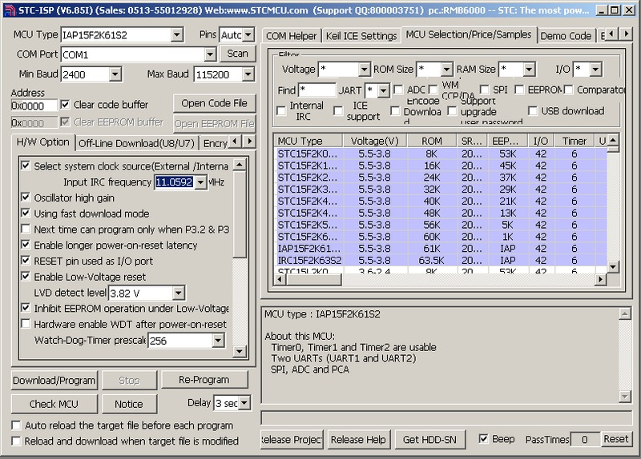
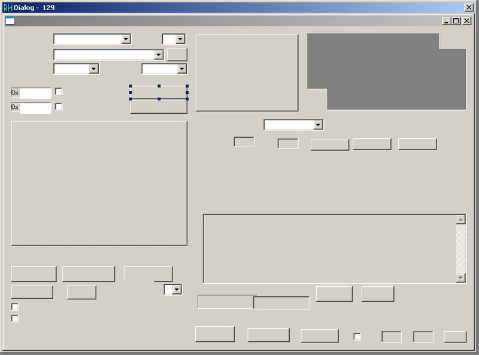
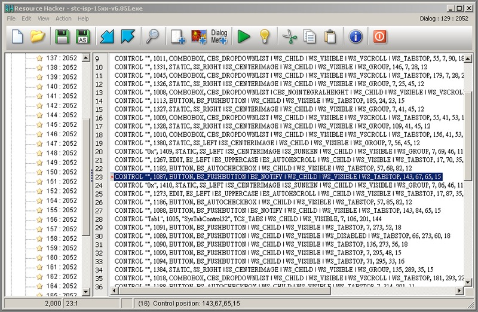
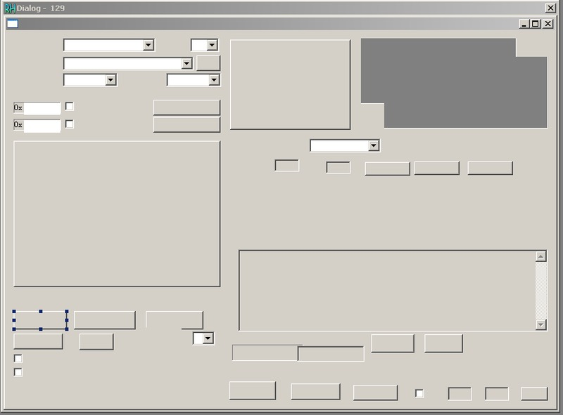
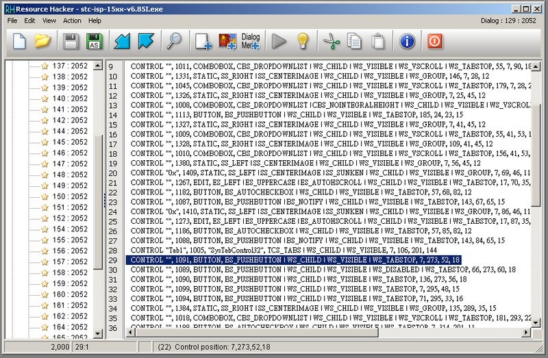
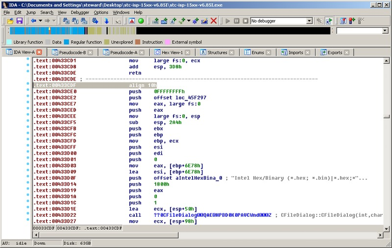
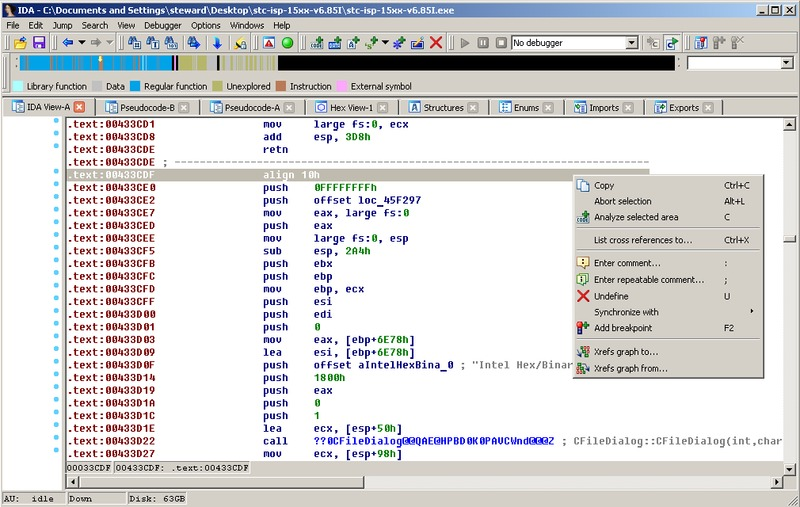
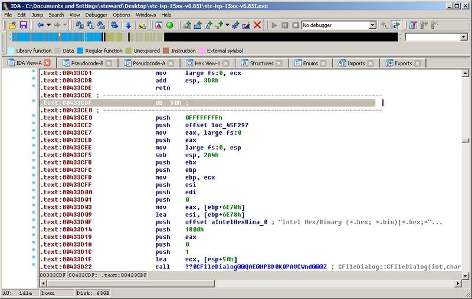
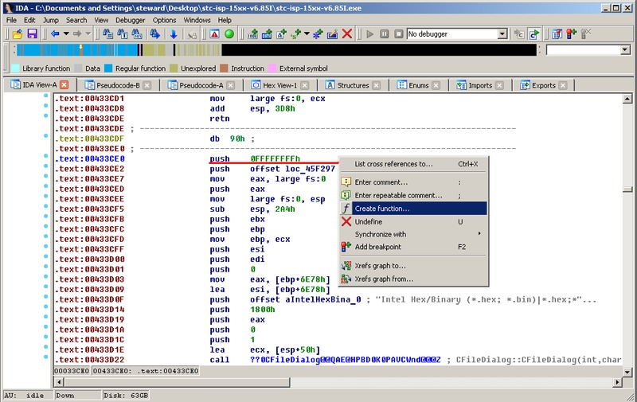
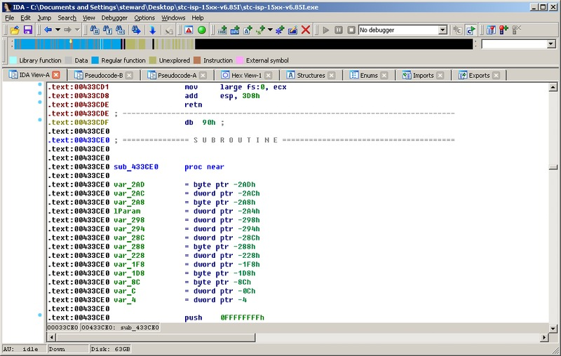

STC15W204S
逆向STC-ISP V6.85I(IDA Pro)
由於司徒想要在N900上開發STC15W204S程式，希望所有東西都在N900上完成，當然，包含也燒錄步驟，因此，首要步驟就是先取得Linux平台上的STC-ISP燒錄軟體，不過，原廠並沒有Linux平台上的相關資源，因此，也不可能提供Linux平台上的燒錄軟體，更不可能提供燒錄的Protocol，實在是相當遺憾的做法。雖然網路上，有一些熱心的開發者有提供自製的燒錄軟體，如：gSTC-ISP、stc-isp、stcflash、stcgal，不過支援的STC單晶片型號還是不及Windows STC-ISP多，因此，司徒打算使用逆向工程的方式去逆向Windows STC-ISP，而目前最新的版本是V6.85I，因此，司徒就鎖定這個版本，因為逆向的過程還蠻花費時間的，因此，司徒將利用空閒的時間，慢慢的逆向Windows STC-ISP，期望有多餘時間可以逆向移植到Linux平台上。
司徒使用IDA Pro逆向Windows STC-ISP，大致瞄一下後，猜測Windows STC-ISP是使用MFC Dialog介面設計的程式，因此，我們可以使用Resource Hacker反查Dialog的Item ID，藉由這ID逆向找出Command的處理副程式位址，目前司徒比較想知道Open Code File和Download/Program的副程式內容，因此，首先找出Open Code File的ID



接著是Download/Program的ID


Open Code File的ID是1087；而Download/Program則是1087，接著可以使用這兩個ID定位出這兩個副程式的位址，不過比較奇怪的是，Open Code File副程式似乎無法使用IDA Pro逆向成C語言，感覺有Anti-Debug的味道，不過應該不是固意設計的，不然應該沒這麼好逆，司徒使用如下方式修復：

在align 10h上按滑鼠右鍵並選擇Undefine


接著在0x433CE0上按滑鼠右鍵並選擇Create function...


目前找出的Open Code File副程式內容如下：
int __thiscall sub_433CE0(CWnd *this) // Open Code File
{
CWnd *v1; // ebp@1
char *v2; // esi@1
const unsigned __int8 *v3; // ST10_4@4
const unsigned __int8 **v4; // eax@5
bool v5; // ST2B_1@5
bool v6; // al@5
int v7; // eax@8
int v8; // eax@8
int v9; // eax@9
int v10; // eax@9
HWND v11; // ecx@9
LRESULT v12; // edi@9
HWND v13; // eax@14
struct CWnd *v14; // edi@14
unsigned __int16 v15; // ax@14
HWND v16; // edx@16
char v18; // [sp+13h] [bp-2ADh]@5
LPARAM v19; // [sp+14h] [bp-2ACh]@4
char v20; // [sp+18h] [bp-2A8h]@5
LPARAM lParam; // [sp+1Ch] [bp-2A4h]@9
char *v22; // [sp+28h] [bp-298h]@16
int v23; // [sp+2Ch] [bp-294h]@16
int v24; // [sp+34h] [bp-28Ch]@10
char v25; // [sp+38h] [bp-288h]@1
int v26; // [sp+98h] [bp-228h]@1
int v27; // [sp+C8h] [bp-1F8h]@1
char v28; // [sp+E8h] [bp-1D8h]@18
char v29; // [sp+234h] [bp-8Ch]@16
int v30; // [sp+2BCh] [bp-4h]@1
v1 = this;
v2 = (char *)this + 28280;
CFileDialog::CFileDialog(&v25, 1, 0, *((_DWORD *)this + 7070), 6144, aIntelHexBina_0, 0);
v30 = 0;
v26 += 12;
v27 = (int)&unk_4931C4;
if ( !dword_49DE08 )
v27 = (int)aOpenCodeFile;
if ( CFileDialog::DoModal((CFileDialog *)&v25) == 1 )
{
v3 = *(const unsigned __int8 **)CFileDialog::GetFileExt(&v25, &v19);
LOBYTE(v30) = 1;
if ( !mbsicmp(v3, &byte_492E58)
|| (v4 = (const unsigned __int8 **)CFileDialog::GetFileExt(&v25, &v20),
v5 = mbsicmp(*v4, &byte_493048) == 0,
CString::~CString((CString *)&v20),
v6 = v5,
v18 = 0,
v6) )
v18 = 1;
LOBYTE(v30) = 0;
CString::~CString((CString *)&v19);
if ( v18 )
{
v7 = CFileDialog::GetPathName(&v25, &v19);
LOBYTE(v30) = 2;
v8 = CString::operator=((char *)v1 + 28272, v7);
CString::operator=((char *)v1 + 28276, v8);
LOBYTE(v30) = 0;
CString::~CString((CString *)&v19);
sub_42F120(v1, 0);
}
else
{
v9 = CFileDialog::GetPathName(&v25, &v19);
LOBYTE(v30) = 3;
v10 = CString::operator=((char *)v1 + 28264, v9);
CString::operator=(v2, v10);
LOBYTE(v30) = 0;
CString::~CString((CString *)&v19);
sub_431CC0(v1, 0);
sub_42EB60(v1);
sub_431C70(v1);
sub_438CB0(v1);
v11 = (HWND)*((_DWORD *)v1 + 626);
v12 = 0;
lParam = 8;
if ( SendMessageA(v11, 0x1304u, 0, 0) > 0 )
{
do
{
SendMessageA(*((HWND *)v1 + 626), 0x1305u, v12, (LPARAM)&lParam);
if ( !v24 )
break;
++v12;
}
while ( v12 < SendMessageA(*((HWND *)v1 + 626), 0x1304u, 0, 0) );
}
if ( v12 != SendMessageA(*((HWND *)v1 + 626), 0x1304u, 0, 0)
&& v12 != SendMessageA(*((HWND *)v1 + 626), 0x130Bu, 0, 0) )
{
SendMessageA(*((HWND *)v1 + 626), 0x130Cu, v12, 0);
v13 = GetParent(*((HWND *)v1 + 626));
v14 = CWnd::FromHandle(v13);
v19 = *((_DWORD *)v1 + 626);
v15 = CWnd::GetDlgCtrlID((CWnd *)((char *)v1 + 2472));
SendMessageA(*((HWND *)v14 + 8), 0x111u, v15 | 0x10000, v19);
}
sub_435160(v1);
}
}
v16 = (HWND)*((_DWORD *)v1 + 626);
memset(&lParam, 0, 0x1Cu);
lParam = 9;
v22 = &v29;
v23 = 128;
SendMessageA(v16, 0x1305u, 2u, (LPARAM)&lParam);
if ( v24 == 14 )
{
SendMessageA(*((HWND *)v1 + 626), 0x1308u, 2u, 0);
SendMessageA(*((HWND *)v1 + 626), 0x1307u, 0xFu, (LPARAM)&lParam);
}
v30 = 4;
CString::~CString((CString *)&v28);
v30 = -1;
return CDialog::~CDialog((CDialog *)&v25);
}
Download/Program內容如下：
int __thiscall sub_407620(int this) // Download/Program
{
int v1; // esi@1
int v2; // eax@1
bool v3; // zf@1
char *v4; // eax@1
int v5; // ecx@5
BYTE v6; // dl@5
void *v7; // ST04_4@5
void *v8; // ST04_4@5
char v9; // dl@6
char v10; // cl@6
char v11; // dl@6
int v12; // ecx@6
bool v13; // cl@7
DWORD v14; // eax@15
char v15; // al@19
int result; // eax@21
char *v17; // eax@22
char *v18; // eax@26
char *v19; // eax@31
char v20; // al@34
char v21; // [sp+0h] [bp-48h]@0
char v22; // [sp+0h] [bp-48h]@3
char Buffer; // [sp+10h] [bp-38h]@1
char v24; // [sp+11h] [bp-37h]@1
char v25; // [sp+12h] [bp-36h]@1
char v26; // [sp+13h] [bp-35h]@1
char v27; // [sp+14h] [bp-34h]@1
char v28; // [sp+15h] [bp-33h]@1
char v29; // [sp+16h] [bp-32h]@1
char v30; // [sp+17h] [bp-31h]@1
struct _COMMTIMEOUTS CommTimeouts; // [sp+18h] [bp-30h]@5
struct _DCB DCB; // [sp+2Ch] [bp-1Ch]@5
v1 = this;
v2 = *(_DWORD *)(this + 180);
Buffer = 127;
v3 = v2 == 0;
v24 = 127;
v25 = 127;
v26 = 127;
v27 = 127;
v28 = 127;
v29 = 127;
v30 = 127;
v4 = asc_482D04;
if ( v3 )
v4 = aCheckingTarget;
sub_406830(this, v4, v21);
while ( 1 )
{
if ( *(_BYTE *)(v1 + 22) )
{
sub_407120(v1, *(_DWORD *)(v1 + 192), -1);
sub_407390(v1);
v9 = *(_BYTE *)(v1 + 26);
*(_BYTE *)(v1 + 1533) = *(_BYTE *)(v1 + 232);
v10 = *(_DWORD *)(v1 + 204) != 0 ? 2 : 0;
*(_BYTE *)(v1 + 1534) = v9;
v11 = *(_BYTE *)(v1 + 208);
*(_BYTE *)(v1 + 1535) = v10 + 3;
v12 = *(_DWORD *)(v1 + 332);
*(_BYTE *)(v1 + 1532) = -8;
*(_BYTE *)(v1 + 1536) = v11;
v13 = v12 ? *(_BYTE *)(v1 + 24) != 0 : 0;
*(_BYTE *)(v1 + 1537) = v13;
*(_BYTE *)(v1 + 1538) = *(_BYTE *)(v1 + 300);
sub_406D80(v1 + 1532, 6u);
}
else
{
SetupComm(*(HANDLE *)(v1 + 16), 0x2000u, 0x2000u);
GetCommState(*(HANDLE *)(v1 + 16), &DCB);
v5 = *(_DWORD *)(v1 + 304);
v6 = *(_BYTE *)(v1 + 312);
DCB.BaudRate = *(_DWORD *)(v1 + 192);
DCB.StopBits = v6;
DCB.Parity = v5 != 0 ? 2 : 0;
v7 = *(void **)(v1 + 16);
DCB.ByteSize = 8;
*((_DWORD *)&DCB + 2) |= 1u;
SetCommState(v7, &DCB);
v8 = *(void **)(v1 + 16);
CommTimeouts.ReadIntervalTimeout = 0;
CommTimeouts.ReadTotalTimeoutMultiplier = 10;
CommTimeouts.ReadTotalTimeoutConstant = 0;
CommTimeouts.WriteTotalTimeoutMultiplier = 0;
CommTimeouts.WriteTotalTimeoutConstant = 5000;
SetCommTimeouts(v8, &CommTimeouts);
PurgeComm(*(HANDLE *)(v1 + 16), 0xFu);
}
v24 = 127;
Buffer = 127;
sub_4070D0(-1);
sub_406E70(v1, 0, 1);
do
{
if ( !*(_BYTE *)(v1 + 21) )
return 3;
if ( (unsigned __int8)sub_4070F0(v1) )
return 2;
if ( !*(_BYTE *)(v1 + 20) && !*(_BYTE *)(v1 + 22) )
{
v14 = *(_DWORD *)(v1 + 320);
if ( (signed int)v14 >= 8 )
v14 = 8;
sub_406C00(v1, &Buffer, v14);
sub_4075A0(0);
}
}
while ( !(unsigned __int8)sub_406E70(v1, (LPVOID)(v1 + 508), 0) );
v15 = *(_BYTE *)(v1 + 22);
if ( *(_BYTE *)(v1 + 508) != 81 )
break;
if ( v15 )
return 1;
result = sub_40E090(v1, 0);
if ( result == -2 )
{
v17 = asc_482CCC;
if ( !*(_DWORD *)(v1 + 180) )
v17 = aReconnectDownl;
sub_406830(v1, v17, v22);
}
else
{
if ( result )
return result;
v18 = asc_482C90;
if ( !*(_DWORD *)(v1 + 180) )
v18 = aReCheckingTarg;
sub_406830(v1, v18, v22);
}
}
if ( v15 && *(_BYTE *)(v1 + 508) == 82 )
{
v19 = aU8DSIC;
if ( !*(_DWORD *)(v1 + 180) )
v19 = aU8IsOvercurren;
sub_406830(v1, v19, v22);
}
v20 = *(_BYTE *)(v1 + 508);
if ( v20 && v20 != 80 )
{
if ( v20 == -128 )
goto LABEL_40;
if ( v20 != -113 )
return 1;
}
if ( v20 == -128 )
{
LABEL_40:
Sleep(0x32u);
*(_BYTE *)(v1 + 1532) = -128;
sub_406D80(v1 + 1532, 1u);
sub_4070D0(5000);
sub_406E70(v1, 0, 1);
while ( *(_BYTE *)(v1 + 21) )
{
if ( (unsigned __int8)sub_4070F0(v1) )
return 2;
if ( !*(_BYTE *)(v1 + 20) && !*(_BYTE *)(v1 + 22) )
{
sub_406C00(v1, &Buffer, 1u);
sub_4075A0(0);
}
if ( (unsigned __int8)sub_406E70(v1, (LPVOID)(v1 + 508), 1) )
{
if ( *(_BYTE *)(v1 + 508) == 80 )
return 0;
return 1;
}
}
return 3;
}
return 0;
}